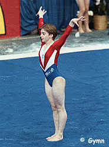

Karine Mermet (FRA)
1991 Mediterranean Games AA Champion
 |
Karine was born on July 12, 1974. She trained at the US Creteil Club and her favorite event was beam. Mermet fractured her elbow during podium training at the 1991 World Championships, which eventually required three operations to repair. She missed the Barcelona Olympics, retiring from gymnastics at age 18.
Competition Results
1988
Jr. European Championships: 7th AA, 5th B, 5th FX, 7th UB
1989
American Cup: 7th AA
Chunichi Cup: 7th AA
European Championships: 12th AA, 7th V
Intl. Mixed Pairs: 6th Team
Jr. European Team Championships: 3rd AA
Tokyo Cup: 4th B
World Championships (Stuttgart): 24th AA
1990
American Cup: 15th AA (prelims)
European Championships: 8th AA, 5th V, 6th B
FRA-GDR Dual Meet: 1st AA
French International: 9th AA
Golden Sands: 6th AA
Intl. Mixed Pairs: 7th Team
World Cup: 12th AA, 5th V
World Stars: 17th AA
1991
FRA-BUL Dual Meet: 1st AA
Hungarian International: 7th AA
Mediterranean Games: 1st AA
This page was created on January 27, 2000.
© Gymn Forum